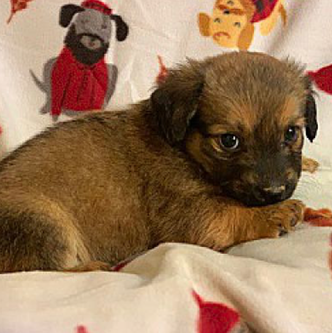
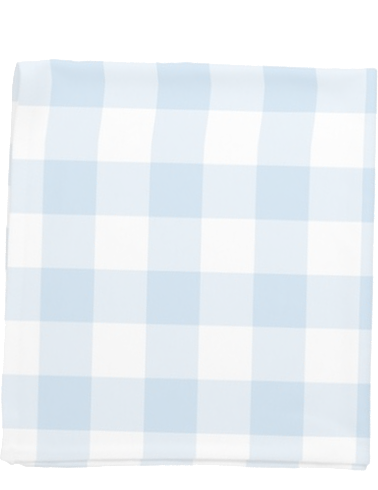
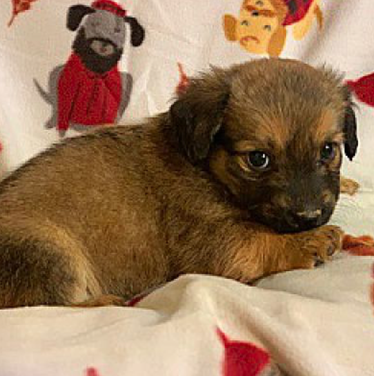
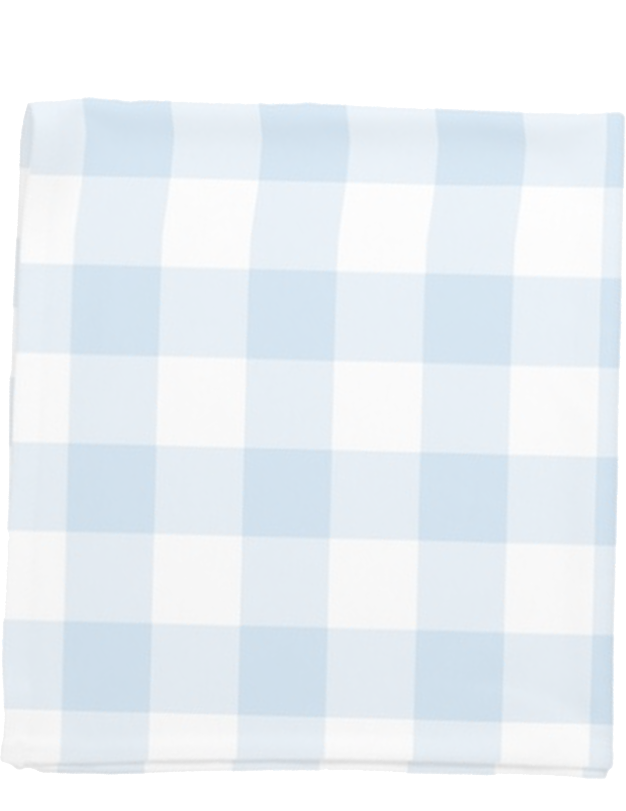

Hi! My name is Roarke. I am a really tiny, adorable pup and I am just looking for my furever home! My mom and my siblings and I were brought into a shelter in South Carolina as strays. I am 8 weeks old (born around December 17, 2019), weigh about 3 pounds, and I love dogs, cats and kids. I am doing so well with all of them in my foster home! I am neutered, microchipped, heartworm negative, dewormed, current with all vaccines (as appropriate for my age) and on flea and heartworm prevention. I am all ready to be adopted :) My adoption fee is $450, and covers all of my vetting, and includes transport if my new family lives in the northeast USA. Please visit http://www.daybeforetherainbow.com/adoption-info.html to fill out an adoption application form, or email my rescue at daybeforetherainbow@yahoo.com! Thanks for checking me out! I am currently being fostered in South Carolina and I can catch a ride up north to meet my new family.
We require an application to be filled out. Please email us for an application at: daybeforetherainbow@gmail.com. After the application is submitted, we will review it and will email you back and set up a time for you to pickup your new family member. It may take several days for us to check your application. Please be patient with us, as we are all very busy volunteers. We will notify you as soon as possible about the status of your application. Fees vary depending on the animal--adoption fees are listed in the description of each animal. An adoption contract must be signed at time of adoption. You will receive the pet's records, microchip registration and 30 days of free pet insurance at the time of the adoption as well.
Day Before The Rainbow is a group of dedicated animal lovers who volunteer their time to help the otherwise helpless animals in our area. We rescue animals which are about to be euthanized in high-kill shelters. We are a strictly foster based rescue and all animals are kept in private foster homes until adopted. Please contact us today to meet any one of our adoptable animals!